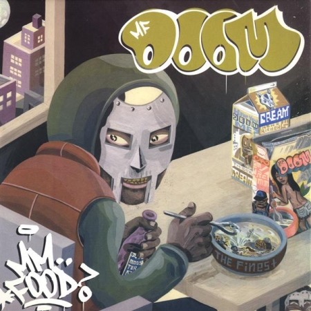
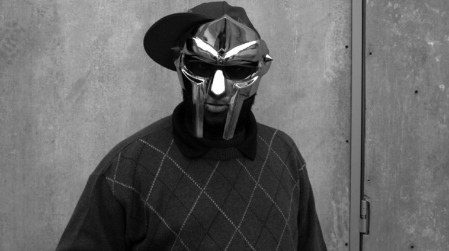

Por quê "MM... Books"?
"MM... Books" é um trocadilho com o nome do álbum "MM... food" do rapper MF DOOM, adaptado para o tema de literatura do nosso site. Esse nome foi escolhido pois o nosso grupo não tinha ideia de qual nome por, e então, quem vos escreve (Quaresma), que gosta muito do DOOM e estava escutando a faixa "One Beer" do mesmo albúm nessa hora, teve, em um brilhante momento de associação de palavras, a ideia para o nome do site.
Quem é MF DOOM?
Daniel Dumile(9 de janeiro 1971 - 31 de outubro de 2020), popularmente conhecido como MF DOOM, foi um rapper britânico, que viveu grande parte da sua vida nos Estados Unidos. DOOM é um dos maiores nomes do hip-hop, não pelo seu sucesso no mainstream, que, infelizmente, ele nunca chegou a atingir, mas pelo seu impacto na indústria e qualidade, que até hoje influencia muitos artistas e conquista uma legião de fãs, que mesmo não sendo muito grande, ainda tem muit apreço pelo seu trabalho.
Tendo tudo isso em vista, eu(Quaresma de novo), te convido a testar seus conhecimentos sobre o maior Vilão do Hip-hop em um quiz que o nosso grupo preparou com muito carinho :))
Venha fazer o teste